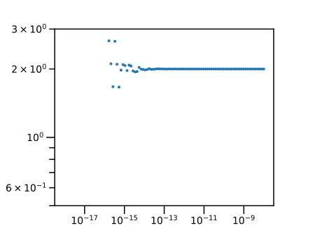
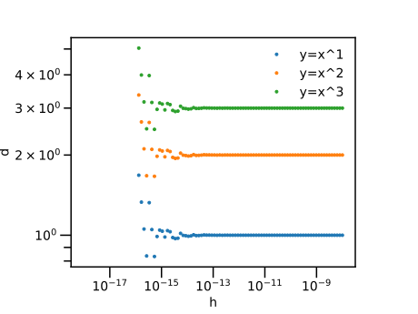
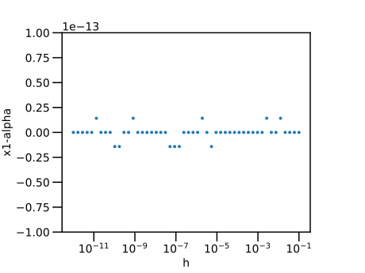
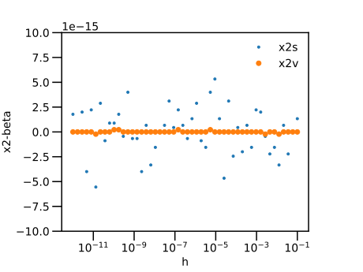
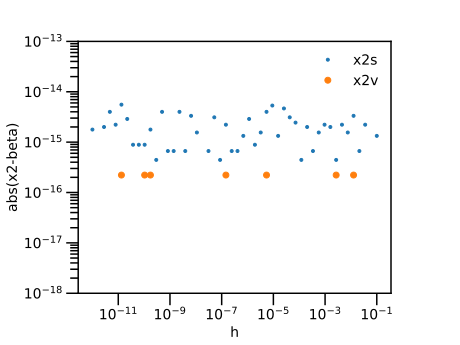

第7回：■ 浮動小数点数
■ 浮動小数点数
● 正規化数，副正規化数
浮動小数点数（floating-point number）とは，$0.12$ の代わりに $1.2 \times 10^{-1}$ のように表示する数である．
10進数の浮動小数点数は
\[\pm{\left(d_0.d_1d_2\cdots \right)}_{10}\times 10^{e}\]
のように表される．$\times$ の前まで の ${\left(d_{0}.d_{1}d_2\cdots \right)}_{10}$ の部分を仮数部（mantissa part，significand）と呼ぶ． 添字の $10$ は 10進数を意味し，$d_{0}, d_{1}, \cdots$ は $0, 1, \ldots, 9$ までの数字である．$\times$ の後ろの $10^{e}$ を指数部（exponent part）と呼ぶ．
2進数の浮動小数点数は
\[\pm{\left(b_0.b_1b_2\cdots \right)}_{2}\times 2^{e}\]
のように表される． ここで，$\times$ の前までの ${\left(b_{0}.b_{1}b_{2}\cdots \right)}_{2}$ の部分を仮数部と呼ぶ． 添字の $2$ は2進数を意味し，$b_{0}, b_{1}, \cdots$ は $0$ または $1$ の数字である．$\times$ の後ろの $2^{e}$ を指数部と呼ぶ．
「bit（binary digit，ビット）」とは，2進数の一桁のことである．
本文で用いる浮動小数点数は Float64 型である．
julia> typeof(1.0)Float64
以下で，浮動小数点数の2進数による表現を詳しく説明するが， 丸暗記する内容ではない．しかし，計算機内部の小数が 「有限桁」で行われることは，計算機による数値計算では常に意識すべきである．
Float64 型は，「IEEE754標準倍精度浮動小数点数」に基づき，
- 符号部 1 bit,
- 指数部 11 bit
- 仮数部 53 bit
から構成される． ただし，以下のように先頭の 1 bitを固定し， 仮数部の 52 bit のみをデータとして採用するため， 2進数の並びは 1+11+52 = 64 bit である．
Float64 型の数値は，正規化数，副正規化数，数でない数の３種類からなりたっている．
・正規化数は，$b_{0} = 1$ として，
\[\pm{\left(1.b_{1}b_{2}\cdots b_{52}\right)}_{2}\times 2^{e}\]
のように表される数である． ここで，指数は $−1022 \le e \le 1023$ の範囲である． 仮数 ${\left(1.b_1b_2\cdots b_{52}\right)}_2$ は $1$ 以上で $2$ を超えない範囲の小数となる．
・正規化数で表すことができない，絶対値が小さい浮動小数点数は副正規化数で表わされる．
副正規化数は，$b_{0} = 0$, $e=−1023$ として，
\[\pm{\left(0.b_{1}b_{2}\cdots b_{52}\right)}_{2}\times 2^{e}\]
のように表される数である． 仮数部 ${\left(1.b_{1}b_{2}\cdots b_{52}\right)}_{2}$ は $0$ 以上で $1$ を超えない範囲の小数となる．
・「数でない数」は，■ 0による除算で，すでに説明した． Inf, -Inf, NaN の３つである．
Float64 で表すことができる，絶対値がもっとも大きい数は， 正規化数の $2^{1024}≃1.798\times10^{308}$ である． 絶対値がもっとも小さい数は， 副正規化数の $2^{−1022}≃2.225\times10^{−308}$ である．
これらは，関数 floatmax , floatmin でそれぞれ得られる．
julia> floatmax(Float64)1.7976931348623157e308julia> floatmin(Float64)2.2250738585072014e-308
丸め
10進数の小数 $0.2$ は
\[0.2 = \dfrac{1}{5} = \dfrac{1}{{101}_{2}}\]
となるが，$1$ を ${101}_{2}$ で割り切ることはできない．$0.2$ を2進数で表すと
\[{0.00110011001100\cdots}_{2}\]
のようになる．すなわち，$1100$ の並びが無限に続く循環小数となる．
また，10進数の小数 $0.1$ は
\[0.1 = \dfrac{1}{5\times 2} = \dfrac{1}{{101}_{2}} \times 2^{-1}\]
であるから，$0.1$ を2進数で表すと（上を2進数で1桁ずらして）
\[{0.000110011001100\cdots}_{2}\]
のようになる．これも，$1100$ の並びが無限に続く循環小数となる．
「有限桁の小数」で表すことができない「循環小数」を， Float64 型で表現するとき， その仮数の末尾に近い桁を修正する操作を行う場合がある． この操作を「丸める」（rounding）という．
「丸め」られた浮動小数の計算は，筆算とは違う結果となる場合がある． 例えば，
julia> 0.1+0.20.30000000000000004julia> 0.1+0.2 == 0.3false
筆算の結果は $0.3$であるが， 計算結果は 0.30000000000000004 と異なってしまう．
別の例として，$0.1$ を 10回足した結果は
julia> s = 00julia> for i = 1:10 global s s += 0.1 endjulia> @show ss = 0.9999999999999999 0.9999999999999999julia> s == 1.0false
0.9999999999999999 となり，$1.0$ にはならない．
このような，「丸め」を原因とする， 正しい値からの「ずれ」を「丸め誤差」と呼んでいる．
▼ 小数を2進数へ変換する
（正の）小数を2進数に変換するには， 小数を $2$ 倍しその整数部分を取り出す操作を，繰り返し行えばよい．
\[0 < x = f_{1} 2^{-1} + f_{2} 2^{-2} + \cdots < 1\]
小数 $0.2$ を，2進数で表示すると循環小数になる． 1100 のパターンが繰り返し現れる．
julia> x = 0.20.2julia> for i = 1:50 global x q = floor(Int64, x / 2) print(q) x -= q * 2 x *= 2 end00001100110011001100110011001100110011001100110011
上の結果の最初の桁は，$2^1$ の桁に相当する． すなわち，小数点は，２つ目の数字の後ろに位置する．
floor(Int64, ...) の部分は，床関数の結果を整数型にする． ▶ 床関数・天井関数の型を整数型にする を参照
▲ 練習：有限小数・循環小数
$0.5$ 以下の正の小数をいくつかを選び， これらを2進数に直してみよ．有限小数か循環小数かを判定せよ．
例: 0.1, 0.2, 0.25, 0.3, 0.5
さらに，5つ程度の例を加えよ．
■ 加減算における桁落ちと情報落ち
加算と減算は，小数点の位置を合わせて計算されるが， 桁数が有限であることから，正しい値が得られない場合がある． その原因のうち「桁落ち」と「情報落ち」の二つの現象が知られている．
■ 桁落ち
「桁落ち」は，互いに非常に近い二つの数 $x, y$ に対して， 減算 $x-y$ を行うと，結果の有効桁数が大きく減少する現象である．
例えば，有効桁数が 4桁の二つの数の引き算の例を見よう．
julia> 2.345 - 1.2331.112julia> 1.234 - 1.2320.0020000000000000018
前者の結果は 4 桁の有効桁数を保っているのに対して， 後者の結果は 1 桁の有効桁数になってしまう．（末尾の 18 は丸め誤差である)．
式を変形して， 互いに近い数どうしを引くことを回避できる場合がある． 下の例を参考にせよ． → ▼ 2次方程式
■ 情報落ち
「情報落ち」は，絶対値が大きく異なる数を加減算すると，小さい桁の精度が失われる現象である．
例えば，3つの数 $x = 14\times 10^{-17}$, $y = 24\times 10^{-16}$, $z = 1$ を， この順番で加えた結果と，逆の順番で加えた結果を比較しよう．
julia> x = 14e-171.4e-16julia> y = 24e-162.4e-15julia> z = 11julia> xyz = (x + y) + z1.0000000000000024julia> zyx = (z + y) + x1.0000000000000027
筆算による正しい値は 1.00000000000000253 であるが， 後者の和よりも前者の和が，正しい値に近い．
後者の和が誤差を大きく含んだのは，和 $z+y$ の段階で，有効桁数をほぼ使い切ったからである．
julia> zy = z + y1.0000000000000024julia> nextfloat(zy) # z+y の「隣りの」正しく表される数1.0000000000000027
一般に，大きさの異なる数どうしを加減算する場合には， 絶対値が小さいものから計算を進めたほうがよい．
ここで見たように，有限桁数の浮動小数点数の加減算は「結合則」を満たさない．
\[(x+y)+z \neq x+(y+x)\]
■ 等差数列
等差数列を作る方法として，■ 範囲を，先に紹介した．
関数 range(a,b,length=n) は，等差数列を作る別の方法である． この関数は，初項 $a$ から始めて $b$ で終わる等差数列を作る． 要素の数は $n$ 個であり，等差（要素どうしの間隔）は，自動的に計算される． 結果は ■ 範囲 になる（場合が多い）．
julia> range(0, 10, length = 11)0.0:1.0:10.0
length=10 の形の引数は，キーワード引数と呼ばれる．
■ 等比級数
等比級数は，一定の数（等比 common multiplier）を順番に乗じて得られる数列である． 等比級数は，指数関数を，ベクトルや範囲と組合わせて作ることができる．
以下は，初項 $10^{0}=1$ から始めて，$10^{3}=1000$ で終わる等比級数 (要素は $4$ 個 ) を作る．すなわち，$1, 10, 100, 1000$ を作る．
julia> # 整数 10 .^ (0:3)4-element Vector{Int64}: 1 10 100 1000julia> # 小数 exp10.(0:3)4-element Vector{Float64}: 1.0 10.0 100.0 1000.0
以下は，$1$ から始まり $1000$ で終わる，要素 10 個の等比級数を作る．
julia> exp10.(range(0, 3, length = 10))10-element Vector{Float64}: 1.0 2.154434690031884 4.641588833612778 10.0 21.544346900318832 46.4158883361278 100.0 215.44346900318845 464.15888336127773 1000.0
▼ 数値微分
\[\dfrac{df(x_0)}{dx} = \lim_{h \longrightarrow 0}\dfrac{f(x_0+h)-f(x_0)}{h}\]
関数 $y=x^2$ の $x=1$ における微分係数を， 上の定義により求めよう． 求まるべき値は $2$ であるが，$h$ を小さくすると $2$ の上下に暴れてしまう．
using PyPlot
# h=logspace(-18,-8,100)
h = exp10.(range(-18, -8, length = 100))
d = ((1.0 .+ h) .^ 2 .- 1.0) ./ h
plt.plot(h, d, ".")
plt.ylim(5e-1, 3e0)
plt.yscale("log")
plt.xscale("log")
今度は，関数 $y=x^n$（ただし$n = 1, 2, 3$ ） の $x=1$ における微分係数を， 上の定義により求めよう． 求まるべき値は $n$ であるが，$h$ を小さくすると $n$ の上下に暴れてしまう．
using PyPlot
# h=logspace(-18,-8,100)
h = exp10.(range(-18, -8, length = 100))
for n = 1:3
local d = ((1.0 .+ h) .^ n .- 1.0) ./ h
plt.plot(h, d, ".", label = "y=x^" * string(n))
end
plt.xlabel("h")
plt.ylabel("d")
plt.yscale("log")
plt.xscale("log")
plt.legend()
以上の誤差も，非常に近い二つの数字を減じたときに現れる「桁落ち」の現象である． ▼ 2次方程式とは異なり，うまく回避する手段はない．$h$を小さく取りすぎないように注意する．
▼ 練習・数値微分
以下の関数の，指定された座標での微分係数を，上の例と同様に求めてみよ．
- 指数関数 $y = \exp{x}, \; x = 0$
- 対数関数 $y = \log{x}, \; x = 1$
- 対数関数 $y = \log\left(1+x\right), \; x = 0 \;$ ．注: 関数
Base.log1p— Function を用いよ． - 三角関数 $y = \sin{x}, \; x = 1$ ．注: 正しい微分係数は $0.540302305868140$ である．
■ 近似比較演算子 isapprox
条件式 x == 1 は， 数 x が 1 と完全に一致することを判定するので， 数 x が丸め誤差を含むような場合に用いるのに適さない．
その代わりに，丸め誤差の基準を適当な数， 例えば，$10^{-6}$ をとって， 条件式 abs(x-1) < 1e-6 をもって，数 $x$が $1$ に非常に近いことを判定するのが常套手段である．
julia> x = 1 + 1e-81.00000001julia> x == 0falsejulia> abs(x - 1) < 1e-6true
Julia には，数 a と b がほぼ等しいことを判定する 近似比較演算子 isapprox(a,b) が用意されているので， 必要に応じて用いるとよい． a と b との丸め誤差の程度を考慮して，比較を行う便利な関数である．
julia> 0.1 + 0.2 == 0.3falsejulia> isapprox(0.1 + 0.2, 0.3)true
関数 isapprox(a,b) の片方の引数を 0 にする，例えば，isapprox(a,0) と書くと 「 a が近似的に 0 に等しい」ことの判定ではなく，a == 0 の等値の判定 （→ 値が等しい・異なる）の意味になる．この場合には，省略可能な引数である atol （絶対誤差，absolute tolerance）を追加で指定するとよい． atol には a のとりうる典型的な値の平方根を指定することが，よく行われる．詳しくは，関数 Base.isapprox - Function のマニュアルを参照せよ．
julia> isapprox(1e-3, 0, atol = 1e-8)falsejulia> isapprox(1e-10, 0, atol = 1e-8)true
▼ 2次方程式
2次方程式
\[x^{2} - bx + c = 0\]
の解は，解の公式から，判別式 $d = b^2-4c$ を用いて
\[\begin{aligned} x_{1} & = \dfrac{b+\sqrt{d}}{2}=\dfrac{b+\sqrt{b^{2}-4c}}{2} \\ x_{2} & = \dfrac{b-\sqrt{d}}{2}=\dfrac{b-\sqrt{b^{2}-4c}}{2} \end{aligned}\]
と求められるが，$b$ と $\sqrt{d}$ が同程度のとき $x_{2}$ は「桁落ち」しやすい．
そこで，$(b + \sqrt{b^{2}-4c})$ を分母分子に掛けて
\[x_{21} = \dfrac{2c}{b+\sqrt{b^2-4c}}=\dfrac{c}{x_{1}}\]
のように変形してから計算する（「分子を有理化する」）．最後の項は，解と係数の関係 $x_1x_2=c$ による．
解と係数の関係． $x^2-bx+c=0$ の解が $x_1, x_2$ であるとき，
\[(x-x_{1})(x-x_{2}) = x^{2}-(x_{1} + x_{2}) x+ x_{1} x_{2} = x^2-bx+c,\]
であるから，末尾の２つを比較して，以下を得る．
\[\begin{aligned} b & = x_{1} + x_{2},\\ c & = x_{1}x_{2} \end{aligned}\]
▼ 2次方程式：計算の例
実例で見てみよう．
小さい正の数 $h$ を用いて，$\alpha = 100+h$ と $\beta = 1+h$ を 解とする2次方程式を作る． 解と係数の関係から， 上の方程式において $b = \alpha + \beta$, $c=\alpha\beta$ と定めればよい．
# h=logspace(-12,-1);
h = exp10.(range(-12, -1, length = 50))
alpha = 100.0 .+ h
beta = 1.0 .+ h;
c = alpha .* beta;
b = alpha .+ beta;50-element Vector{Float64}:
101.00000000000199
101.00000000000335
101.00000000000563
101.00000000000944
101.0000000000158
101.00000000002652
101.00000000004445
101.00000000007455
101.000000000125
101.00000000020961
⋮
101.0031997174392
101.00536539159057
101.00899686533793
101.01508624012672
101.02529710433711
101.04241901775839
101.07112960612446
101.11927246633189
101.19999999999999解の公式から，「大きいほうの解」 x1 を計算する．
x2sは解の公式から求めた「小さいほうの解」である．x2vは解と係数の関係から求めた「小さいほうの解」である．
d = b .* b - 4c;
x1 = (b + sqrt.(d)) / 2;
x2s = (b - sqrt.(d)) / 2;
x2v = c ./ x1;50-element Vector{Float64}:
1.000000000001
1.0000000000016769
1.0000000000028118
1.000000000004715
1.0000000000079061
1.000000000013257
1.00000000002223
1.000000000037276
1.0000000000625056
1.0000000001048115
⋮
1.001599858719606
1.0026826957952795
1.0044984326689694
1.0075431200633547
1.0126485521685527
1.021209508879202
1.0355648030622313
1.0596362331659464
1.1「大きいほうの解」について，正しい解との差を描く．
using PyPlot
plt.plot(h, x1 - alpha, ".")
plt.xlabel("h")
plt.ylabel("x1-alpha")
plt.xscale("log")
plt.ylim(-1e-13, 1e-13) # 調節せよ
「小さいほうの解」について，正しい解との差を描く．上に続けて
using PyPlot
plt.plot(h, x2s - beta, ".", label = "x2s")
plt.plot(h, x2v - beta, "o", label = "x2v")
plt.xlabel("h")
plt.ylabel("x2-beta")
plt.xscale("log")
plt.legend()
plt.ylim(-1e-14, 1e-14) # 調節せよ
「小さいほうの解」について，正しい解との差の絶対値（残余）を描く．上に続けて
using PyPlot
plt.plot(h, abs.(x2s - beta), ".", label = "x2s")
plt.plot(h, abs.(x2v - beta), "o", label = "x2v")
plt.xlabel("h")
plt.ylabel("abs(x2-beta)")
plt.xscale("log")
plt.ylim(1e-18, 1e-13) # 調節せよ
plt.yscale("log")
plt.legend()
解の公式から求めた「小さいほうの解」の残余が「あばれる」のに対して， 解と係数の関係から求めた小さいほうの解」の残余が「一定」である様子が見れる．
■ 数でない数の判定
■ 0による除算で説明したように， IEEE754規格の浮動小数点数は， 「数でない数」 NaN, Inf, -Inf の3つを含んでいる． これらを判定する関数が用意されている．
julia> for x in [0, 1, Inf, -Inf, NaN] @show x @show isfinite(x) @show isinf(x) @show isnan(x) endx = 0.0 isfinite(x) = true isinf(x) = false isnan(x) = false x = 1.0 isfinite(x) = true isinf(x) = false isnan(x) = false x = Inf isfinite(x) = false isinf(x) = true isnan(x) = false x = -Inf isfinite(x) = false isinf(x) = true isnan(x) = false x = NaN isfinite(x) = false isinf(x) = false isnan(x) = true
★今回のまとめ
- 浮動小数点数
- 有限小数・循環小数
- 加減算における桁落ち・情報落ち
- 近似比較演算子
- 等差数列・等比数列
- 数値微分
- 数でない数